<!DOCTYPE html>
<html lang="en"><head>
<script src="driftG_MMEE_rev_files/libs/clipboard/clipboard.min.js"></script>
<script src="driftG_MMEE_rev_files/libs/quarto-html/tabby.min.js"></script>
<script src="driftG_MMEE_rev_files/libs/quarto-html/popper.min.js"></script>
<script src="driftG_MMEE_rev_files/libs/quarto-html/tippy.umd.min.js"></script>
<link href="driftG_MMEE_rev_files/libs/quarto-html/tippy.css" rel="stylesheet">
<link href="driftG_MMEE_rev_files/libs/quarto-html/light-border.css" rel="stylesheet">
<link href="driftG_MMEE_rev_files/libs/quarto-html/quarto-syntax-highlighting-587c61ba64f3a5504c4d52d930310e48.css" rel="stylesheet" id="quarto-text-highlighting-styles"><meta charset="utf-8">
  <meta name="generator" content="quarto-1.8.26">

  <meta name="author" content="Bob Week KiTE Postdoc · Schulenburg Group · Kiel University bobweek.github.io · @bweek.bsky.social">
  <title>Stochastic Eco-Evolutionary Dynamics of Multivariate Traits</title>
  <meta name="apple-mobile-web-app-capable" content="yes">
  <meta name="apple-mobile-web-app-status-bar-style" content="black-translucent">
  <meta name="viewport" content="width=device-width, initial-scale=1.0, maximum-scale=1.0, user-scalable=no, minimal-ui">
  <link rel="stylesheet" href="driftG_MMEE_rev_files/libs/revealjs/dist/reset.css">
  <link rel="stylesheet" href="driftG_MMEE_rev_files/libs/revealjs/dist/reveal.css">
  <style>
    code{white-space: pre-wrap;}
    span.smallcaps{font-variant: small-caps;}
    div.columns{display: flex; gap: min(4vw, 1.5em);}
    div.column{flex: auto; overflow-x: auto;}
    div.hanging-indent{margin-left: 1.5em; text-indent: -1.5em;}
    ul.task-list{list-style: none;}
    ul.task-list li input[type="checkbox"] {
      width: 0.8em;
      margin: 0 0.8em 0.2em -1em; /* quarto-specific, see https://github.com/quarto-dev/quarto-cli/issues/4556 */ 
      vertical-align: middle;
    }
  </style>
  <link rel="stylesheet" href="driftG_MMEE_rev_files/libs/revealjs/dist/theme/quarto-534cd8e3a96973385dffff3f4709048d.css">
  <link rel="stylesheet" href="daytime.css">
  <link href="driftG_MMEE_rev_files/libs/revealjs/plugin/quarto-line-highlight/line-highlight.css" rel="stylesheet">
  <link href="driftG_MMEE_rev_files/libs/revealjs/plugin/reveal-menu/menu.css" rel="stylesheet">
  <link href="driftG_MMEE_rev_files/libs/revealjs/plugin/reveal-menu/quarto-menu.css" rel="stylesheet">
  <link href="driftG_MMEE_rev_files/libs/revealjs/plugin/quarto-support/footer.css" rel="stylesheet">
  <style type="text/css">
    .reveal div.sourceCode {
      margin: 0;
      overflow: auto;
    }
    .reveal div.hanging-indent {
      margin-left: 1em;
      text-indent: -1em;
    }
    .reveal .slide:not(.center) {
      height: 100%;
    }
    .reveal .slide.scrollable {
      overflow-y: auto;
    }
    .reveal .footnotes {
      height: 100%;
      overflow-y: auto;
    }
    .reveal .slide .absolute {
      position: absolute;
      display: block;
    }
    .reveal .footnotes ol {
      counter-reset: ol;
      list-style-type: none; 
      margin-left: 0;
    }
    .reveal .footnotes ol li:before {
      counter-increment: ol;
      content: counter(ol) ". "; 
    }
    .reveal .footnotes ol li > p:first-child {
      display: inline-block;
    }
    .reveal .slide ul,
    .reveal .slide ol {
      margin-bottom: 0.5em;
    }
    .reveal .slide ul li,
    .reveal .slide ol li {
      margin-top: 0.4em;
      margin-bottom: 0.2em;
    }
    .reveal .slide ul[role="tablist"] li {
      margin-bottom: 0;
    }
    .reveal .slide ul li > *:first-child,
    .reveal .slide ol li > *:first-child {
      margin-block-start: 0;
    }
    .reveal .slide ul li > *:last-child,
    .reveal .slide ol li > *:last-child {
      margin-block-end: 0;
    }
    .reveal .slide .columns:nth-child(3) {
      margin-block-start: 0.8em;
    }
    .reveal blockquote {
      box-shadow: none;
    }
    .reveal .tippy-content>* {
      margin-top: 0.2em;
      margin-bottom: 0.7em;
    }
    .reveal .tippy-content>*:last-child {
      margin-bottom: 0.2em;
    }
    .reveal .slide > img.stretch.quarto-figure-center,
    .reveal .slide > img.r-stretch.quarto-figure-center {
      display: block;
      margin-left: auto;
      margin-right: auto; 
    }
    .reveal .slide > img.stretch.quarto-figure-left,
    .reveal .slide > img.r-stretch.quarto-figure-left  {
      display: block;
      margin-left: 0;
      margin-right: auto; 
    }
    .reveal .slide > img.stretch.quarto-figure-right,
    .reveal .slide > img.r-stretch.quarto-figure-right  {
      display: block;
      margin-left: auto;
      margin-right: 0; 
    }
  </style>
  <script>
  window.MathJax = {
    tex: {
      macros: {
        acid: ["{\\color{#1b8c98}{#1}}", 1],
        pink: ["{\\color{#c2185b}{#1}}", 1],
        lime: ["{\\color{#3c8500}{#1}}", 1],
        violet: ["{\\color{#5a4cc7}{#1}}", 1]
      }
    }
  };
  </script>
</head>
<body class="quarto-light">
  <div class="reveal">
    <div class="slides">

<section id="title-slide" class="quarto-title-block center">
  <h1 class="title">Stochastic Eco-Evolutionary Dynamics of Multivariate Traits</h1>
  <p class="subtitle">A stochastic neutral baseline for G-matrix orientation</p>

<div class="quarto-title-authors">
<div class="quarto-title-author">
<div class="quarto-title-author-name">
<strong>Bob Week</strong><br>KiTE Postdoc · Schulenburg Group · Kiel University<br><br>bobweek.github.io · <span class="citation" data-cites="bweek.bsky.social">@bweek.bsky.social</span> 
</div>
</div>
</div>

</section>
<section id="the-neutral-null-for-bf-g-matrix-orientation" class="slide level2 center">
<h2>The neutral null for <span class="math inline">\(\bf G\)</span>-matrix orientation</h2>
<div class="columns cols2">
<div class="column" style="width:52%;">
<p>A standard expectation:</p>
<p><span class="math display">\[
\mathbb E[\mathbf G_t]=\mathbf G_0 e^{-t/N_e}
\]</span></p>
<p>So drift erodes heritable variation.</p>
<p>But because every entry shrinks proportionally,</p>
<p><span class="math display">\[
\rho\big(\mathbb E[\mathbf G_t]\big)=\rho(\mathbf G_0)
\]</span></p>
</div><div class="column" style="width:42%;">
<div class="quarto-figure quarto-figure-center">
<figure>
<p>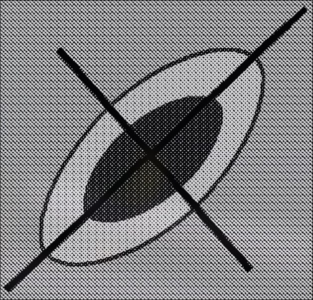</p>
</figure>
</div>
<div class="fragment">
<div class="quarto-figure quarto-figure-center">
<figure>
<p>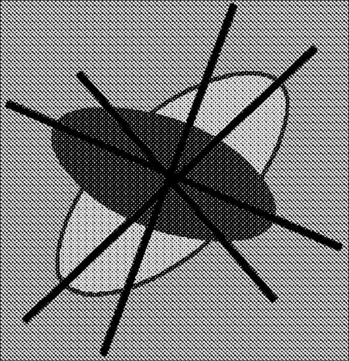</p>
</figure>
</div>
</div>
</div></div>
<div class="fragment">
<p><strong>Question:</strong> does the <em>typical realized population</em> preserve <span class="math inline">\(\mathbf G\)</span> orientation, or only the expectation?</p>
</div>
</section>
<section id="drift-changes-individual-bf-g-matrices" class="slide level2 center">
<h2>Drift changes individual <span class="math inline">\(\bf G\)</span>-matrices</h2>
<div class="columns cols2">
<div class="column" style="width:57%;">
<div class="quarto-figure quarto-figure-center">
<figure>
<p>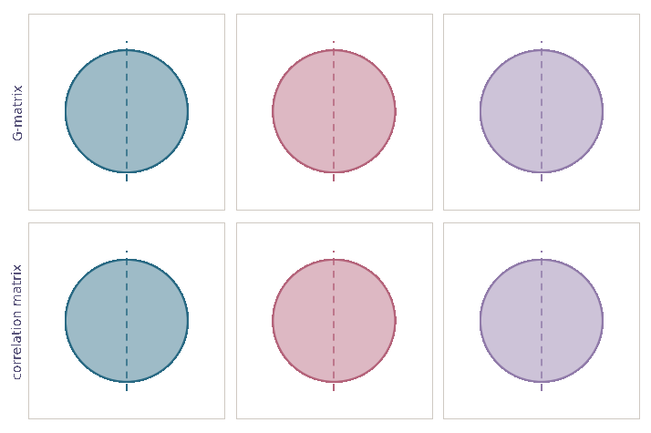</p>
</figure>
</div>
</div><div class="column" style="width:39%;">
<p>Classical mean behavior is correct.</p>
<p>But individual populations follow paths.</p>
<p>For nonlinear summaries such as</p>
<p><span class="math display">\[
\rho_{ij}(\mathbf G)=\frac{G_{ij}}{\sqrt{G_{ii}G_{jj}}},
\]</span></p>
<p><span class="math display">\[
\mathbb E[\rho(\mathbf G_t)]\neq \rho(\mathbb E[\mathbf G_t]).
\]</span></p>
</div></div>
</section>
<section id="the-puzzle" class="slide level2 center">
<h2>The puzzle</h2>
<div class="columns cols2">
<div class="column" style="width:48%;">
<div class="quarto-figure quarto-figure-center">
<figure>
<p>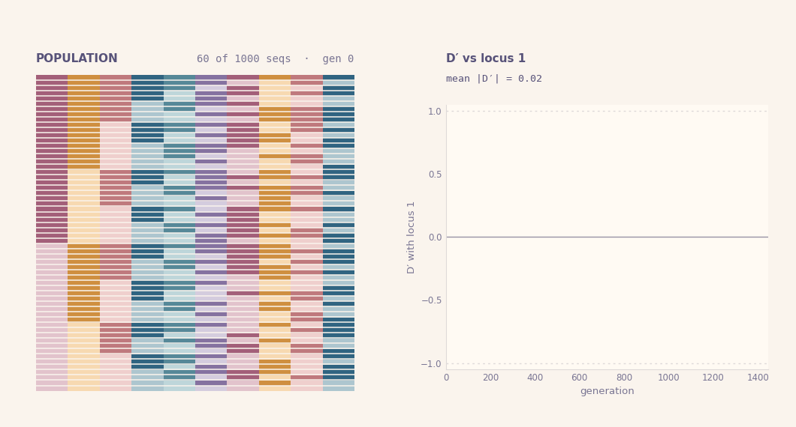</p>
</figure>
</div>
</div><div class="column" style="width:48%;">
<p>Drift is known to:</p>
<ul>
<li class="fragment">erode heritable variation;</li>
<li class="fragment">generate random associations among loci;</li>
<li class="fragment">make replicate populations diverge.</li>
</ul>
<p>But quantitative-genetic theory usually describes drift on <span class="math inline">\(\mathbf G\)</span> through an expectation.</p>
<p>That leaves no pathwise neutral model for <span class="math inline">\(\mathbf G\)</span> orientation.</p>
</div></div>
</section>
<section id="strategy-derive-bf-g-dynamics-from-a-population-process" class="slide level2 center">
<h2>Strategy: derive <span class="math inline">\(\bf G\)</span> dynamics from a population process</h2>
<p>A diffusion approximation separates robust population-level ingredients from microscopic turnover details.</p>
<div class="columns cols3">
<div class="column" style="width:30%;">
<p><strong>Individual turnover</strong></p>
<p>births, deaths, mutation, reproductive variance</p>
</div><div class="column" style="width:30%;">
<p><strong>Measure-valued diffusion</strong></p>
<p>trait distribution evolves stochastically in <span class="math inline">\(\mathbb R^d\)</span></p>
</div><div class="column" style="width:30%;">
<p><strong>Moment dynamics</strong></p>
<p><span class="math inline">\(n\)</span>, <span class="math inline">\(\bar{\mathbf z}\)</span>, <span class="math inline">\(\mathbf G\)</span>, and derived quantities</p>
</div></div>
<p>Retained macroscopic ingredients:</p>
<p><span class="math display">\[
\pink{m(\nu,\mathbf z)}\quad\text{growth / selection},
\qquad
\lime{\mathbf M}\quad\text{mutation covariance},
\qquad
\violet{v}\quad\text{reproductive variance}.
\]</span></p>
</section>
<section id="heuristic-picture-of-the-diffusion-limit" class="slide level2 center">
<h2>Heuristic picture of the diffusion limit</h2>
<iframe src="branching/index.html" width="820" height="350" style="border:0; display:block; margin:0 auto;" title="Branching diffusion">
</iframe>
<p>For one useful scaling,</p>
<p><span class="math display">\[
k\left[W^{1/k}(\mathcal P_t^{(k)},\mathbf z)-1\right]
\longrightarrow m(\nu_t,\mathbf z).
\]</span></p>
<p>Different individual-based models can share the same limit.</p>
<p>The point is not to keep every microscopic detail; it is to identify what survives at the population scale.</p>
</section>
<section id="moment-equations-are-projections-of-one-process" class="slide level2 center">
<h2>Moment equations are projections of one process</h2>
<p>The same stochastic population process gives consistent dynamics for abundance, mean traits and covariance.</p>
<p><span class="math display">\[
\mathrm dn=\pink{\bar m n}\,\mathrm dt+\violet{\sqrt{vn}\,\mathrm dB_n}
\]</span></p>
<p><span class="math display">\[
\mathrm d\bar{\mathbf z}=\pink{\mathrm{Cov}(m,\mathbf z)}\,\mathrm dt
+\violet{\sqrt{\frac vn\mathbf P}\,\mathrm d\mathbf B_{\bar{\mathbf z}}}
\]</span></p>
<p><span class="math display">\[\begin{multline}
\mathrm d\mathbf P=\Big[\lime{\mathbf M}+\pink{\mathrm{Cov}\big(m,(\mathbf z-\bar{\mathbf z})(\mathbf z-\bar{\mathbf z})^\top\big)}\violet{-\frac vn\mathbf P}\Big]\,\mathrm dt \\
+\violet{\sqrt{\frac vn(\mathbf K-\mathbf P\otimes\mathbf P)}:\mathrm d\mathbf B_{\mathbf P}}.
\end{multline}\]</span></p>
<p>This hierarchy is not closed in general.</p>
</section>
<section id="gaussian-closure-usable-multivariate-quantitative-genetics" class="slide level2 center">
<h2>Gaussian closure: usable multivariate quantitative genetics</h2>
<p>Assume additive genetic values are multivariate normal and traits decompose as</p>
<p><span class="math display">\[
\mathbf z=\mathbf g+\mathbf e,
\qquad
\mathrm{Cov}(\mathbf z)=\mathbf G+\mathbf E.
\]</span></p>
<p>Then the <span class="math inline">\(\mathbf G\)</span> dynamics close as</p>
<p><span class="math display">\[\begin{multline}
\mathrm d\mathbf G=igg[\lime{\mathbf M}
+\pink{2\mathbf G(\nabla_{\mathbf G}\bar m-\overline{\nabla_{\mathbf G}m})\mathbf G}
\violet{-\frac vn\mathbf G}\bigg]\,\mathrm dt \\
+\violet{\sqrt{\frac vn(\mathbf G\overline\otimes\mathbf G+
\mathbf G\underline\otimes\mathbf G)}:\mathrm d\mathbf B_{\mathbf G}}.
\end{multline}\]</span></p>
<p>This is the part I need for a stochastic neutral model of <span class="math inline">\(\mathbf G\)</span>.</p>
</section>
<section id="neutral-bf-g-matrix-dynamics-under-drift" class="slide level2 center">
<h2>Neutral <span class="math inline">\(\bf G\)</span>-matrix dynamics under drift</h2>
<p><span class="math display">\[
\mathrm d\mathbf G=
\violet{-\frac{1}{N_e}\mathbf G\,\mathrm dt}
+
\violet{\sqrt{\frac{1}{N_e}
(\mathbf G\underline\otimes\mathbf G+\mathbf G\overline\otimes\mathbf G)}:\mathrm d\mathbf B}
\]</span></p>
<p>where</p>
<p><span class="math display">\[
\frac{1}{N_e}=\frac vn,
\qquad
N_e=\frac nv.
\]</span></p>
<p>Assumptions for this neutral baseline:</p>
<ul>
<li class="fragment"><span class="math inline">\(m(\nu,\mathbf z)\equiv0\)</span>;</li>
<li class="fragment"><span class="math inline">\(\mathbf M=\mathbf 0\)</span>;</li>
<li class="fragment">constant <span class="math inline">\(n\)</span> and <span class="math inline">\(v\)</span>;</li>
<li class="fragment">no explicit recombination, selection or new mutation.</li>
</ul>
</section>
<section id="from-mathbf-g-to-genetic-correlations" class="slide level2 center">
<h2>From <span class="math inline">\(\mathbf G\)</span> to genetic correlations</h2>
<p>Apply Itô’s formula to</p>
<p><span class="math display">\[
\rho=f(\mathbf G)=\frac{G_{ij}}{\sqrt{G_{ii}G_{jj}}}.
\]</span></p>
<p>The component form is</p>
<p><span class="math display">\[
\mathrm dG_{ij}= -\frac vnG_{ij}\,\mathrm dt
+\sqrt{\frac vn\left(G_{ii}G_{jj}+G_{ij}^2\right)}\,\mathrm dB_{G_{ij}}.
\]</span></p>
<p>The Brownian terms covary. The martingale version keeps those covariances correct while combining stochastic terms:</p>
<p><span class="math display">\[
a\,\mathrm d\mathcal M(x)+b\,\mathrm d\mathcal M(y)
=\mathrm d\mathcal M(ax+by).
\]</span></p>
</section>
<section id="genetic-correlations-tend-towards-pm1" class="slide level2 center">
<h2>Genetic correlations tend towards <span class="math inline">\(\pm1\)</span></h2>
<p><span class="math display">\[
\mathrm d\rho=
\pink{-\frac{1}{2N_e}\rho(1-\rho^2)}\,\mathrm dt
+
\violet{\sqrt{\frac{1}{N_e}(1-\rho^2)}\,\mathrm dB}.
\]</span></p>
<div class="columns cols2">
<div class="column" style="width:58%;">
<div class="quarto-figure quarto-figure-center">
<figure>
<p>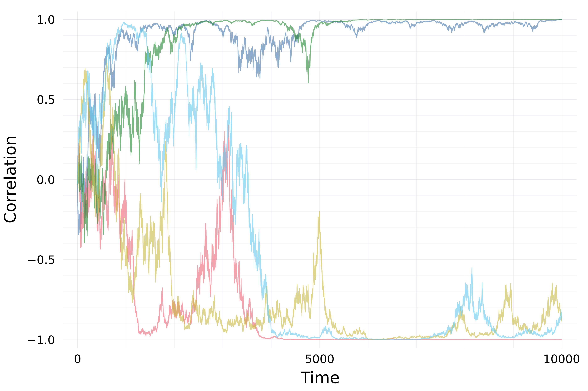</p>
<figcaption>Five replicates starting at <span class="math inline">\(\rho_0=0\)</span>, with <span class="math inline">\(1/N_e=0.001\)</span></figcaption>
</figure>
</div>
</div><div class="column" style="width:38%;">
<div class="quarto-figure quarto-figure-center">
<figure>
<p>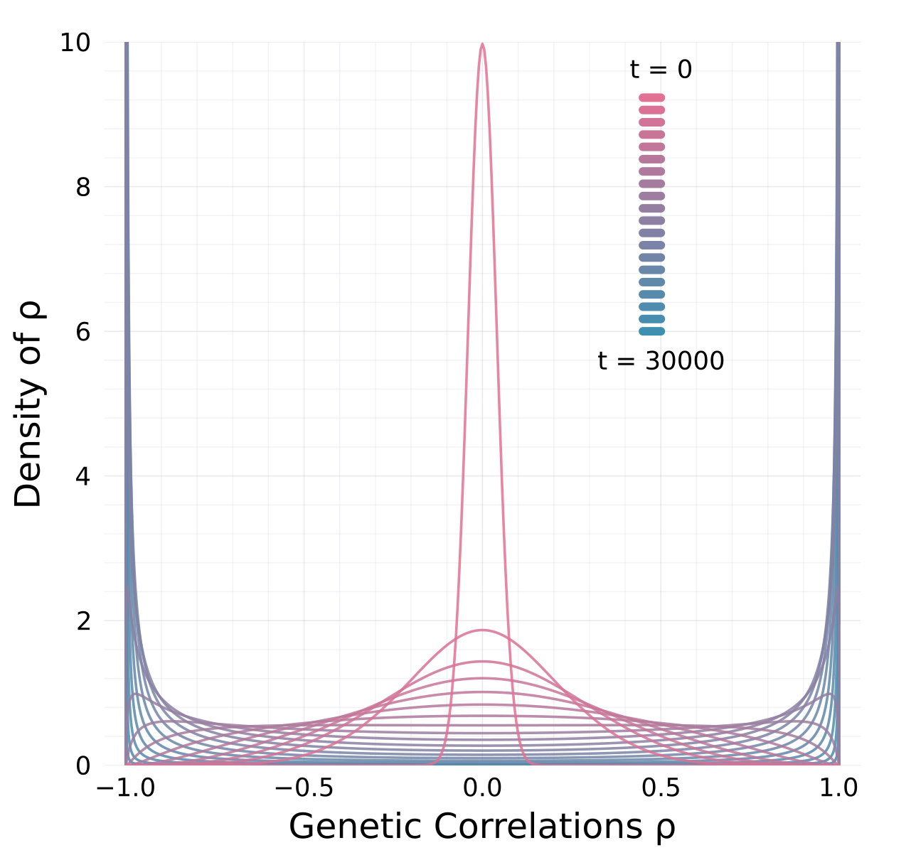</p>
<figcaption>Evolution of pdf for <span class="math inline">\(\rho\)</span>, with <span class="math inline">\(1/N_e=0.001\)</span></figcaption>
</figure>
</div>
</div></div>
<div class="fragment">
<p>Under drift alone in this isolated neutral baseline, realized populations concentrate near extreme genetic correlations.</p>
</div>
</section>
<section id="why-the-drift-term-does-not-contradict-this" class="slide level2 center">
<h2>Why the drift term does not contradict this</h2>
<p>The Itô drift term points back toward zero:</p>
<p><span class="math display">\[
-\frac{1}{2N_e}\rho(1-\rho^2).
\]</span></p>
<p>But the diffusion coefficient vanishes at the boundaries:</p>
<p><span class="math display">\[
\sqrt{\frac{1}{N_e}(1-\rho^2)}.
\]</span></p>
<p>So the process spends increasing time near <span class="math inline">\(\rho=\pm1\)</span>.</p>
<p>Equivalently, with <span class="math inline">\(u=\operatorname{arctanh}(\rho)\)</span>,</p>
<p><span class="math display">\[
\mathrm du = \sqrt{\frac{1}{N_e}}\,\frac{1}{\sqrt{1-\rho^2}}\,\mathrm dB,
\]</span></p>
<p>which makes boundary-seeking behavior easier to see.</p>
</section>
<section id="same-expectation-different-pathwise-reality" class="slide level2 center">
<h2>Same expectation, different pathwise reality</h2>
<div class="columns cols2">
<div class="column" style="width:56%;">
<p>Classical expectation:</p>
<p><span class="math display">\[
\mathbb E[\mathbf G_t]=\mathbf G_0e^{-t/N_e}
\]</span></p>
<p>Realized neutral paths:</p>
<ul>
<li class="fragment">erode heritable variation;</li>
<li class="fragment">alter <span class="math inline">\(\mathbf G\)</span> orientation;</li>
<li class="fragment">push genetic correlations toward extremes.</li>
</ul>
</div><div class="column" style="width:40%;">
<div class="quarto-figure quarto-figure-center">
<figure>
<p></p>
</figure>
</div>
</div></div>
<div class="fragment">
<p>The previous null is not wrong. It is an expectation-level null, not a pathwise null for orientation.</p>
</div>
</section>
<section id="empirical-motivation-orientation-can-scatter-under-drift" class="slide level2 center">
<h2>Empirical motivation: orientation can scatter under drift</h2>
<div class="columns cols2">
<div class="column" style="width:48%;">
<div class="quarto-figure quarto-figure-center">
<figure>
<p>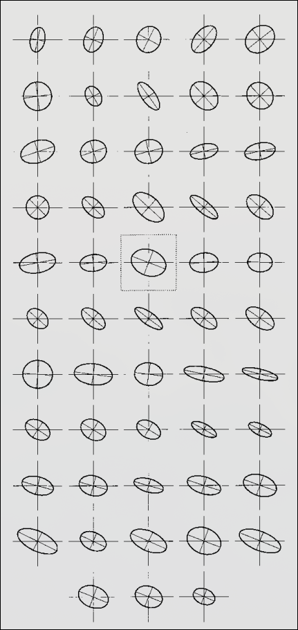</p>
<figcaption>52 <em>Drosophila</em> lines from one ancestor: drift alone scatters genetic correlations across orientations and can flip signs (Phillips et al.&nbsp;2001)</figcaption>
</figure>
</div>
</div><div class="column" style="width:48%;">
<div class="quarto-figure quarto-figure-center">
<figure>
<p>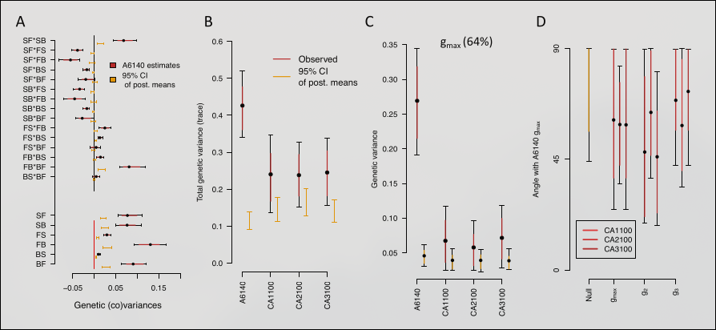</p>
<figcaption>Outcrossing <em>C. elegans</em>, 240 generations: evolved major axes randomly oriented relative to the ancestor (Mallard et al.&nbsp;2023)</figcaption>
</figure>
</div>
</div></div>
<div class="fragment">
<p>Explicit recombining extensions are still needed. But these data reinforce the need for a stochastic neutral orientation baseline.</p>
</div>
</section>
<section id="what-the-framework-buys" class="slide level2 center">
<h2>What the framework buys</h2>
<p>Not just “moments are useful.”</p>
<p>The useful point is that <span class="math inline">\(n\)</span>, <span class="math inline">\(\bar{\mathbf z}\)</span> and <span class="math inline">\(\mathbf G\)</span> are derived from one stochastic population process, so their stochastic terms and cross-covariances are consistent.</p>
<p>That makes it possible to derive new stochastic dynamics for quantities such as</p>
<p><span class="math display">\[
\rho(\mathbf G),\qquad \bar m(n,\bar{\mathbf z},\mathbf G),\qquad
\alpha(\bar{\mathbf z}_1,\bar{\mathbf z}_2),
\]</span></p>
<p>rather than specifying noise terms ad hoc.</p>
</section>
<section id="takeaways" class="slide level2 center">
<h2>Takeaways</h2>
<ol type="1">
<li class="fragment"><p>Drift contracts <span class="math inline">\(\mathbf G\)</span> on average, but individual neutral paths can strongly alter orientation.</p></li>
<li class="fragment"><p>Genetic correlations tend toward <span class="math inline">\(\pm1\)</span> in the isolated drift-only baseline.</p></li>
<li class="fragment"><p>A stochastic moment framework gives a reusable way to derive pathwise population-level models from underlying turnover.</p></li>
</ol>
</section>
<section id="more-in-the-paper" class="slide level2 center">
<h2>More in the paper</h2>

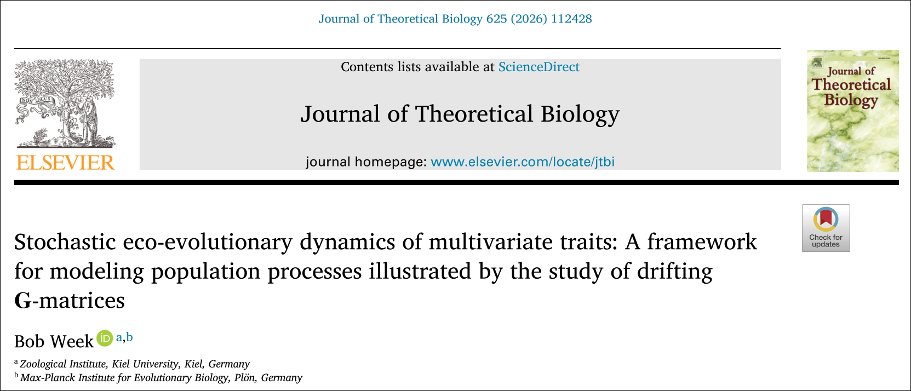<div class="fragment">
<p>Numerical implementations: <code>github.com/bobweek/multi-mtgl</code></p>
</div>
</section>
<section id="thanks-questions" class="slide level2 center">
<h2>Thanks &amp; Questions</h2>
<p>Steve Krone, Peter L. Ralph, Hinrich Schulenburg, Patrick C. Phillips, Arne Traulsen, Jonas Wickman, Brendan Bohannan</p>
<div class="columns cols4">
<div class="column" style="width:23%;">
<p></p>
</div><div class="column" style="width:23%;">
<p></p>
</div><div class="column" style="width:23%;">
<p></p>
</div><div class="column" style="width:23%;">
<p></p>
</div></div>
</section>
<section>
<section id="backup" class="title-slide slide level1 center">
<h1>Backup</h1>

</section>
<section id="backup-how-to-choose-m" class="slide level2 center">
<h2>Backup: how to choose <span class="math inline">\(m\)</span></h2>
<p>The framework is useful when a biological problem can be described through growth rates or fitness functions.</p>
<div class="columns cols2">
<div class="column" style="width:48%;">
<p><strong>Ecological examples</strong></p>
<ul>
<li class="fragment">Logistic growth + stabilizing selection</li>
</ul>
<p><span class="math display">\[
m(\nu,\mathbf z)=r-\tfrac12\mathbf z^\top\mathbf\Psi\mathbf z-cn
\]</span></p>
<ul>
<li class="fragment">Lotka–Volterra interactions</li>
</ul>
<p><span class="math display">\[
m_i=r_i-\sum_j\alpha_{ij}n_j
\]</span></p>
</div><div class="column" style="width:48%;">
<p><strong>Evolutionary examples</strong></p>
<ul>
<li class="fragment">coevolution;</li>
<li class="fragment">evolutionary rescue;</li>
<li class="fragment">host–parasite matching;</li>
<li class="fragment">frequency-dependent interactions;</li>
<li class="fragment">density-dependent eco-evolutionary feedbacks.</li>
</ul>
</div></div>
</section>
<section id="backup-analytical-and-numerical-use" class="slide level2 center">
<h2>Backup: analytical and numerical use</h2>
<p>Numerical use:</p>
<ul>
<li class="fragment">use the Brownian-motion form;</li>
<li class="fragment">integrate with Euler–Maruyama or SDE solvers;</li>
<li class="fragment">see <code>github.com/bobweek/multi-mtgl</code>.</li>
</ul>
<p>Analytical use:</p>
<ul>
<li class="fragment">use Itô’s formula for <span class="math inline">\(\mathrm df(n,\bar{\mathbf z},\mathbf G)\)</span>;</li>
<li class="fragment">use martingale rules to combine correlated stochastic terms;</li>
<li class="fragment">avoid inventing independent noise processes where the population process says they covary.</li>
</ul>
</section>
<section id="backup-full-gaussian-closure" class="slide level2 center">
<h2>Backup: full Gaussian closure</h2>
<p><span class="math display">\[\begin{align}
\mathrm dn &amp;= \bar m n\,\mathrm dt+\sqrt{vn}\,\mathrm dB_n,\\
\mathrm d\bar{\mathbf z} &amp;= \mathbf G(\nabla_{\bar{\mathbf z}}\bar m-\overline{\nabla_{\bar{\mathbf z}}m})\,\mathrm dt
+\sqrt{\frac vn\mathbf G}\,\mathrm d\mathbf B_{\bar{\mathbf z}},\\
\mathrm d\mathbf G &amp;= \left[\mathbf M+2\mathbf G(\nabla_{\mathbf G}\bar m-\overline{\nabla_{\mathbf G}m})\mathbf G-\frac vn\mathbf G\right]\mathrm dt\\
&amp;\qquad+\sqrt{\frac vn(\mathbf G\overline\otimes\mathbf G+\mathbf G\underline\otimes\mathbf G)}:\mathrm d\mathbf B_{\mathbf G}.
\end{align}\]</span></p>
</section>
<section id="backup-formal-foundation" class="slide level2 center">
<h2>Backup: formal foundation</h2>
<p>The density animation is only a visualization.</p>
<p>The formal object is a measure-valued population process characterized by a martingale problem.</p>
<p>For a test function <span class="math inline">\(x\)</span>,</p>
<p><span class="math display">\[
\mathrm dN_t(x)=N_t(Lx)\,\mathrm dt+\mathrm d\mathcal M_t(x),
\]</span></p>
<p>with quadratic covariation</p>
<p><span class="math display">\[
\mathrm d\mathcal M_t(x)\,\mathrm d\mathcal M_t(y)
= v\,N_t(xy)\,\mathrm dt.
\]</span></p>
<p>This is the source of the stochastic covariance structure in the moment equations.</p>
</section>
<section id="backup-reproductive-variance" class="slide level2 center">
<h2>Backup: reproductive variance</h2>
<div class="columns cols2">
<div class="column" style="width:78%;">
<div class="quarto-figure quarto-figure-center">
<figure>
<p>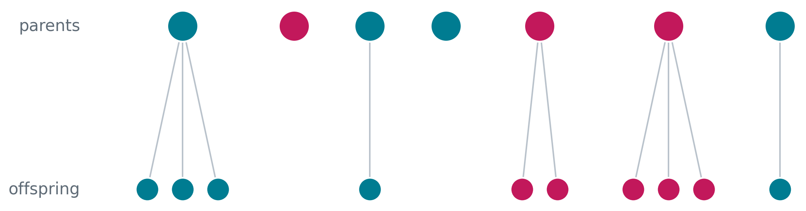</p>
</figure>
</div>
</div><div class="column" style="width:18%;">
<p><span class="math inline">\(v=\)</span> reproductive variance</p>
</div></div>
<div class="fragment">
<p>Higher <span class="math inline">\(v\)</span> means stronger demographic stochasticity and stronger random genetic drift at fixed <span class="math inline">\(n\)</span>.</p>
</div>
</section>
<section id="backup-fixation-intuition" class="slide level2 center">
<h2>Backup: fixation intuition</h2>
<div class="columns cols2">
<div class="column" style="width:18%;">
<p><span class="math inline">\(v&gt;0\implies\)</span> random genetic drift</p>
</div><div class="column" style="width:78%;">
<div class="quarto-figure quarto-figure-center">
<figure>
<p>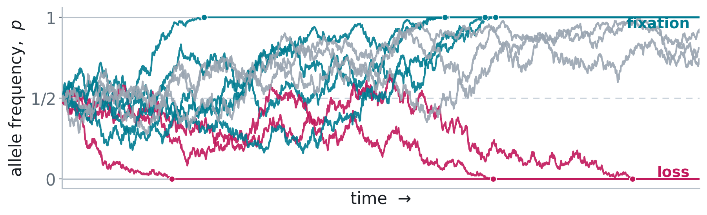</p>
</figure>
</div>
</div></div>

</section></section>
    </div>
  <div class="quarto-auto-generated-content" style="display: none;">
<div class="footer footer-default">

</div>
</div></div>

  <script>window.backupDefine = window.define; window.define = undefined;</script>
  <script src="driftG_MMEE_rev_files/libs/revealjs/dist/reveal.js"></script>
  <!-- reveal.js plugins -->
  <script src="driftG_MMEE_rev_files/libs/revealjs/plugin/quarto-line-highlight/line-highlight.js"></script>
  <script src="driftG_MMEE_rev_files/libs/revealjs/plugin/pdf-export/pdfexport.js"></script>
  <script src="driftG_MMEE_rev_files/libs/revealjs/plugin/reveal-menu/menu.js"></script>
  <script src="driftG_MMEE_rev_files/libs/revealjs/plugin/reveal-menu/quarto-menu.js"></script>
  <script src="driftG_MMEE_rev_files/libs/revealjs/plugin/quarto-support/support.js"></script>
  

  <script src="driftG_MMEE_rev_files/libs/revealjs/plugin/notes/notes.js"></script>
  <script src="driftG_MMEE_rev_files/libs/revealjs/plugin/search/search.js"></script>
  <script src="driftG_MMEE_rev_files/libs/revealjs/plugin/zoom/zoom.js"></script>
  <script src="driftG_MMEE_rev_files/libs/revealjs/plugin/math/math.js"></script>
  <script>window.define = window.backupDefine; window.backupDefine = undefined;</script>

  <script>

      // Full list of configuration options available at:
      // https://revealjs.com/config/
      Reveal.initialize({
'controlsAuto': false,
'previewLinksAuto': false,
'pdfSeparateFragments': false,
'autoAnimateEasing': "ease",
'autoAnimateDuration': 1,
'autoAnimateUnmatched': true,
'jumpToSlide': true,
'menu': {"side":"left","useTextContentForMissingTitles":true,"markers":false,"loadIcons":false,"custom":[{"title":"Tools","icon":"<i class=\"fas fa-gear\"></i>","content":"<ul class=\"slide-menu-items\">\n<li class=\"slide-tool-item active\" data-item=\"0\"><a href=\"#\" onclick=\"RevealMenuToolHandlers.fullscreen(event)\"><kbd>f</kbd> Fullscreen</a></li>\n<li class=\"slide-tool-item\" data-item=\"1\"><a href=\"#\" onclick=\"RevealMenuToolHandlers.speakerMode(event)\"><kbd>s</kbd> Speaker View</a></li>\n<li class=\"slide-tool-item\" data-item=\"2\"><a href=\"#\" onclick=\"RevealMenuToolHandlers.overview(event)\"><kbd>o</kbd> Slide Overview</a></li>\n<li class=\"slide-tool-item\" data-item=\"3\"><a href=\"#\" onclick=\"RevealMenuToolHandlers.togglePdfExport(event)\"><kbd>e</kbd> PDF Export Mode</a></li>\n<li class=\"slide-tool-item\" data-item=\"4\"><a href=\"#\" onclick=\"RevealMenuToolHandlers.toggleScrollView(event)\"><kbd>r</kbd> Scroll View Mode</a></li>\n<li class=\"slide-tool-item\" data-item=\"5\"><a href=\"#\" onclick=\"RevealMenuToolHandlers.keyboardHelp(event)\"><kbd>?</kbd> Keyboard Help</a></li>\n</ul>"}],"openButton":true},
'smaller': false,
 
        // Display controls in the bottom right corner
        controls: true,

        // Help the user learn the controls by providing hints, for example by
        // bouncing the down arrow when they first encounter a vertical slide
        controlsTutorial: false,

        // Determines where controls appear, "edges" or "bottom-right"
        controlsLayout: 'edges',

        // Visibility rule for backwards navigation arrows; "faded", "hidden"
        // or "visible"
        controlsBackArrows: 'faded',

        // Display a presentation progress bar
        progress: true,

        // Display the page number of the current slide
        slideNumber: 'c/t',

        // 'all', 'print', or 'speaker'
        showSlideNumber: 'all',

        // Add the current slide number to the URL hash so that reloading the
        // page/copying the URL will return you to the same slide
        hash: true,

        // Start with 1 for the hash rather than 0
        hashOneBasedIndex: false,

        // Flags if we should monitor the hash and change slides accordingly
        respondToHashChanges: true,

        // Push each slide change to the browser history
        history: true,

        // Enable keyboard shortcuts for navigation
        keyboard: true,

        // Enable the slide overview mode
        overview: true,

        // Disables the default reveal.js slide layout (scaling and centering)
        // so that you can use custom CSS layout
        disableLayout: false,

        // Vertical centering of slides
        center: true,

        // Enables touch navigation on devices with touch input
        touch: true,

        // Loop the presentation
        loop: false,

        // Change the presentation direction to be RTL
        rtl: false,

        // see https://revealjs.com/vertical-slides/#navigation-mode
        navigationMode: 'linear',

        // Randomizes the order of slides each time the presentation loads
        shuffle: false,

        // Turns fragments on and off globally
        fragments: true,

        // Flags whether to include the current fragment in the URL,
        // so that reloading brings you to the same fragment position
        fragmentInURL: false,

        // Flags if the presentation is running in an embedded mode,
        // i.e. contained within a limited portion of the screen
        embedded: false,

        // Flags if we should show a help overlay when the questionmark
        // key is pressed
        help: true,

        // Flags if it should be possible to pause the presentation (blackout)
        pause: true,

        // Flags if speaker notes should be visible to all viewers
        showNotes: false,

        // Global override for autoplaying embedded media (null/true/false)
        autoPlayMedia: null,

        // Global override for preloading lazy-loaded iframes (null/true/false)
        preloadIframes: null,

        // Number of milliseconds between automatically proceeding to the
        // next slide, disabled when set to 0, this value can be overwritten
        // by using a data-autoslide attribute on your slides
        autoSlide: 0,

        // Stop auto-sliding after user input
        autoSlideStoppable: true,

        // Use this method for navigation when auto-sliding
        autoSlideMethod: null,

        // Specify the average time in seconds that you think you will spend
        // presenting each slide. This is used to show a pacing timer in the
        // speaker view
        defaultTiming: null,

        // Enable slide navigation via mouse wheel
        mouseWheel: false,

        // The display mode that will be used to show slides
        display: 'block',

        // Hide cursor if inactive
        hideInactiveCursor: true,

        // Time before the cursor is hidden (in ms)
        hideCursorTime: 5000,

        // Opens links in an iframe preview overlay
        previewLinks: false,

        // Transition style (none/fade/slide/convex/concave/zoom)
        transition: 'fade',

        // Transition speed (default/fast/slow)
        transitionSpeed: 'default',

        // Transition style for full page slide backgrounds
        // (none/fade/slide/convex/concave/zoom)
        backgroundTransition: 'none',

        // Number of slides away from the current that are visible
        viewDistance: 3,

        // Number of slides away from the current that are visible on mobile
        // devices. It is advisable to set this to a lower number than
        // viewDistance in order to save resources.
        mobileViewDistance: 2,

        // The "normal" size of the presentation, aspect ratio will be preserved
        // when the presentation is scaled to fit different resolutions. Can be
        // specified using percentage units.
        width: 1280,

        height: 720,

        // Factor of the display size that should remain empty around the content
        margin: 8.0e-2,

        math: {
          mathjax: 'https://cdn.jsdelivr.net/npm/mathjax@3/es5/tex-chtml-full.js',
          config: 'TeX-AMS_HTML-full',
          tex2jax: {
            inlineMath: [['\\(','\\)']],
            displayMath: [['\\[','\\]']],
            balanceBraces: true,
            processEscapes: false,
            processRefs: true,
            processEnvironments: true,
            preview: 'TeX',
            skipTags: ['script','noscript','style','textarea','pre','code'],
            ignoreClass: 'tex2jax_ignore',
            processClass: 'tex2jax_process'
          },
        },

        // reveal.js plugins
        plugins: [QuartoLineHighlight, PdfExport, RevealMenu, QuartoSupport,

          RevealMath,
          RevealNotes,
          RevealSearch,
          RevealZoom
        ]
      });
    </script>
    <script id="quarto-html-after-body" type="application/javascript">
      window.document.addEventListener("DOMContentLoaded", function (event) {
        const tabsets =  window.document.querySelectorAll(".panel-tabset-tabby")
        tabsets.forEach(function(tabset) {
          const tabby = new Tabby('#' + tabset.id);
        });
        const isCodeAnnotation = (el) => {
          for (const clz of el.classList) {
            if (clz.startsWith('code-annotation-')) {                     
              return true;
            }
          }
          return false;
        }
        const onCopySuccess = function(e) {
          // button target
          const button = e.trigger;
          // don't keep focus
          button.blur();
          // flash "checked"
          button.classList.add('code-copy-button-checked');
          var currentTitle = button.getAttribute("title");
          button.setAttribute("title", "Copied!");
          let tooltip;
          if (window.bootstrap) {
            button.setAttribute("data-bs-toggle", "tooltip");
            button.setAttribute("data-bs-placement", "left");
            button.setAttribute("data-bs-title", "Copied!");
            tooltip = new bootstrap.Tooltip(button, 
              { trigger: "manual", 
                customClass: "code-copy-button-tooltip",
                offset: [0, -8]});
            tooltip.show();    
          }
          setTimeout(function() {
            if (tooltip) {
              tooltip.hide();
              button.removeAttribute("data-bs-title");
              button.removeAttribute("data-bs-toggle");
              button.removeAttribute("data-bs-placement");
            }
            button.setAttribute("title", currentTitle);
            button.classList.remove('code-copy-button-checked');
          }, 1000);
          // clear code selection
          e.clearSelection();
        }
        const getTextToCopy = function(trigger) {
          const outerScaffold = trigger.parentElement.cloneNode(true);
          const codeEl = outerScaffold.querySelector('code');
          for (const childEl of codeEl.children) {
            if (isCodeAnnotation(childEl)) {
              childEl.remove();
            }
          }
          return codeEl.innerText;
        }
        const clipboard = new window.ClipboardJS('.code-copy-button:not([data-in-quarto-modal])', {
          text: getTextToCopy
        });
        clipboard.on('success', onCopySuccess);
        if (window.document.getElementById('quarto-embedded-source-code-modal')) {
          const clipboardModal = new window.ClipboardJS('.code-copy-button[data-in-quarto-modal]', {
            text: getTextToCopy,
            container: window.document.getElementById('quarto-embedded-source-code-modal')
          });
          clipboardModal.on('success', onCopySuccess);
        }
          var localhostRegex = new RegExp(/^(?:http|https):\/\/localhost\:?[0-9]*\//);
          var mailtoRegex = new RegExp(/^mailto:/);
            var filterRegex = new RegExp('/' + window.location.host + '/');
          var isInternal = (href) => {
              return filterRegex.test(href) || localhostRegex.test(href) || mailtoRegex.test(href);
          }
          // Inspect non-navigation links and adorn them if external
         var links = window.document.querySelectorAll('a[href]:not(.nav-link):not(.navbar-brand):not(.toc-action):not(.sidebar-link):not(.sidebar-item-toggle):not(.pagination-link):not(.no-external):not([aria-hidden]):not(.dropdown-item):not(.quarto-navigation-tool):not(.about-link)');
          for (var i=0; i<links.length; i++) {
            const link = links[i];
            if (!isInternal(link.href)) {
              // undo the damage that might have been done by quarto-nav.js in the case of
              // links that we want to consider external
              if (link.dataset.originalHref !== undefined) {
                link.href = link.dataset.originalHref;
              }
            }
          }
        function tippyHover(el, contentFn, onTriggerFn, onUntriggerFn) {
          const config = {
            allowHTML: true,
            maxWidth: 500,
            delay: 100,
            arrow: false,
            appendTo: function(el) {
                return el.closest('section.slide') || el.parentElement;
            },
            interactive: true,
            interactiveBorder: 10,
            theme: 'light-border',
            placement: 'bottom-start',
          };
          if (contentFn) {
            config.content = contentFn;
          }
          if (onTriggerFn) {
            config.onTrigger = onTriggerFn;
          }
          if (onUntriggerFn) {
            config.onUntrigger = onUntriggerFn;
          }
            config['offset'] = [0,0];
            config['maxWidth'] = 700;
          window.tippy(el, config); 
        }
        const noterefs = window.document.querySelectorAll('a[role="doc-noteref"]');
        for (var i=0; i<noterefs.length; i++) {
          const ref = noterefs[i];
          tippyHover(ref, function() {
            // use id or data attribute instead here
            let href = ref.getAttribute('data-footnote-href') || ref.getAttribute('href');
            try { href = new URL(href).hash; } catch {}
            const id = href.replace(/^#\/?/, "");
            const note = window.document.getElementById(id);
            if (note) {
              return note.innerHTML;
            } else {
              return "";
            }
          });
        }
        const findCites = (el) => {
          const parentEl = el.parentElement;
          if (parentEl) {
            const cites = parentEl.dataset.cites;
            if (cites) {
              return {
                el,
                cites: cites.split(' ')
              };
            } else {
              return findCites(el.parentElement)
            }
          } else {
            return undefined;
          }
        };
        var bibliorefs = window.document.querySelectorAll('a[role="doc-biblioref"]');
        for (var i=0; i<bibliorefs.length; i++) {
          const ref = bibliorefs[i];
          const citeInfo = findCites(ref);
          if (citeInfo) {
            tippyHover(citeInfo.el, function() {
              var popup = window.document.createElement('div');
              citeInfo.cites.forEach(function(cite) {
                var citeDiv = window.document.createElement('div');
                citeDiv.classList.add('hanging-indent');
                citeDiv.classList.add('csl-entry');
                var biblioDiv = window.document.getElementById('ref-' + cite);
                if (biblioDiv) {
                  citeDiv.innerHTML = biblioDiv.innerHTML;
                }
                popup.appendChild(citeDiv);
              });
              return popup.innerHTML;
            });
          }
        }
      });
      </script>
    

</body></html>